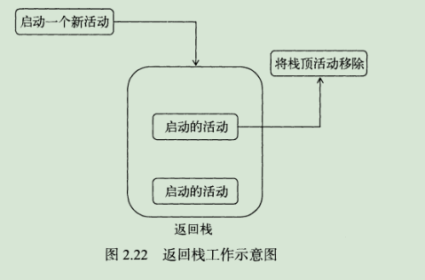
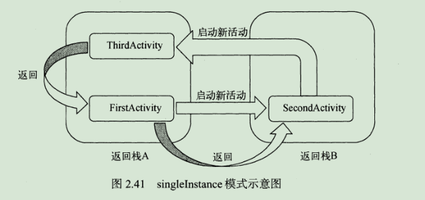

探究活动
什么是活动
活动是一种可以包含用户界面的控件，主要用于和用户进行交互。一个应用程序中可以包含零个或多个活动。
活动的基本用法
首先我们新建个项目ActivityTest来进行练习，模板选择的时候选择add no activity。
手动创建活动
右键点击com.example.activitytest包->New->Activity->Empty Activity。
取名FirstActivity，并且不要勾选Generate Layout File和Launcher Activity这两个选项。
创建和加载布局
右击app/src/main/res目录->New->Directory，就会弹出一个新建目录窗口，这里创建一个名为layout的目录。然后对着layout目录右键->Layout resource file，又会弹出一个新建布局资源的窗口，我们将这个布局文件命名为first_layout，根元素就默认选择为LinearLayout，确认即可。
然后添加个按钮，修改代码为如下：
1 |
|
其中@+id/button_1表示添加一个button_1的id。随后layout_width指定了当前元素的宽度，layout_height指定当前元素的高度，android:text指定了元素中显示的文字内容。
重新回到FirstActivity，将onCreate()方法修改为如下代码：
1 | protected void onCreate(Bundle savedInstanceState) { |
在AndroidManifest文件中注册
实际上Android Studio已经自动帮我们注册了：
1 | <activity android:name=".FirstActivity"></activity> |
其中.FirstActivity是com.example.activitytest.FirstActivity的缩写。因为外层的包已经指定了程序的包名是com.example.activitytest，所以可以直接使用这个缩写就行了。
另外，仅仅注册了活动，程序仍然是不能运行的，需要为程序配置主活动。即在activity标签内部加入<intent-filter>标签，并且加入<action android:name="android.intent.action.MAIN">和<category android:name="android.intent.category.LAUNCHER">这两句声明即可。
除此之外，还可以使用android:label指定活动中标题栏的内容。需注意的是，给主活动指定的label不仅会成为标题栏中的内容，还会成为启动器(Launcher)中应用程序显示的名称。
最终代码：
1 | <activity android:name=".FirstActivity" |
另外，如果应用程序中没有声明任何一个活动作为主活动，这个程序仍然是可以正常安装的，只是无法在启动器中看到或者打开这个程序。
在活动中使用Toast
Toast是Android系统提供的一种非常好的提醒方式，在程序中可以使用它将一些短小的信息通知给用户，这些信息会在一段时间后自动消失，并且不会占用任何屏幕空间。
首先再onCreate()方法中添加如下代码，使我们再点击按钮的时候弹出一个Toast：（注意设置下自动导包）
1 | Button button1 = (Button) findViewById(R.id.button_1); |
其中，findViewById()方法用来获取到在布局文件中定义的元素；它返回的是一个View对象。
onClickListener()方法用来为按钮注册一个监听器，点击按钮时就会执行监听器中的onClick()方法。
Toast用法非常简单，通过静态方法makeText()创建出一个Toast对象后，调用show()即可显示出来。
makeText()的第一个参数为Context，即Toast要求的上下文，由于活动本身就是一个Context对象，因此这里直接传入FirstActivity.this即可。第二个参数是显示的文本内容。第三个参数是Toast显示的时长，有两个内置常量可选择：Toast.LENGTH_SHORT和Toast.LENGTH_LONG。
完成上面的代码修改后编译安装即可。
在活动中使用menu
在res目录下新建一个menu文件夹，右击res目录->New->Directory，输入文件夹名menu，点击OK。接着再这个文件夹下新建一个main的菜单文件，右击文件夹->New->Menu resource file，文件名输入main，点击OK完成创建。
然后再main.xml文件中输入如下代码：
1 | <?xml version="1.0" encoding="utf-8"?> |
<item>标签就是用来创建某一个菜单项，然后通过android:id给这个菜单指定一个唯一的标识符，android:title给这个菜单项指定一个名称。
然后重新回到FirstActivity中来重写onCreateOptionsMenu()方法，可以用快捷键ctrl+O。然后编写如下代码：
1 |
|
通过getMenuInflater()方法可以获得MenuInflater对象，再调用它的inflate()方法就可以给当前活动创建菜单。inflate()接收两个参数，第一个参数用于指定通过哪个资源文件创建菜单，第二个参数用于指定菜单项将添加到哪一个Menu对象中，这里直接用onCreateOptionsMenu()方法传入的参数menu。然后返回true表示允许创建的菜单显示出来，如果返回了false，创建的菜单将无法显示。
然后就是在FirstActivity中重写onOptionsItemSelected()方法：
1 |
|
重新编译运行即可。
销毁一个活动
Activity类提供了一个finish()方法用来销毁当前活动。
修改按钮监听器以销毁活动，代码如下：
1 | button1.setOnClickListener(new View.OnClickListener() { |
这时点下按钮，当前的活动便会被销毁了。
使用Intent在活动之间穿梭
Intent是Android程序中各组件之间进行交互的一种重要方式，它不仅可以指明当前组件想要执行的动作，还可以在不同组件之间传递数据。Intent一般可被用于启动活动、启动服务以及发送广播等场景。
Intent大致可以分为两种：显示Intent和隐式Intent。
使用显示Intent
首先创建一个空的Activity，命名为SecondActivity，并勾选Genrate Layout File，给布局文件起名为second_layout，但不要勾选Launcher Activity选项。
将second_layout.xml替换为如下内容：
1 |
|
然后SecondActivity中保持不变即可。
Intent有多个构造函数的重载，其中一个是Intent(Context packageContext, Class<?>cls)。这个构造函数接收两个参数，第一个参数Context要求提供一个启动活动的上下文，第二个参数Class则是指定想要启动的目标活动，通过这个构造函数就可以构造出Intent的意图。Activity类中提供了一个startActivity()方法，这个方法是专门用于启动活动的，它接收一个Intent参数。
修改FirstActivity中的按钮点击事件：
1 | public void onClick(View v) { |
这样按下按钮后就可以切换到SecondActivity了，如果要返回上一个活动的话按下Back键就可以销毁当前活动，从而回到上一个活动了。
使用隐式Intent
相比于显示Intent，隐式Intent不明确指出想要启动哪个活动，而是指定了一系列更为抽象的action和category等信息，然后交由系统去分析这个Intent，并找出合适的活动去启动。
通过在<activity>标签下配置<intent-filter>的内容，可以指定当前活动能够响应的action和category：
1 | <activity android:name=".SecondActivity"> |
<action>标签中指定了当前活动可以响应com.example.activitytest.ACTION_START这个action，而<category>则包含了一些附加信息，更精确地指明了当前活动能够响应的Intent中还可能带有category。只有<action>和<category>的内容同时能够匹配上Intent中指定的action和category时，这个活动才能响应该Intent。
修改按钮点击事件如下：
1 | button1.setOnClickListener(new View.OnClickListener() { |
因为设置了android.intent.category.DEFAULT，所以在调用startActivity()方法时会自动将这个category添加到Intent中。
可以通过修改如下代码来添加一个category：
1 | button1.setOnClickListener(new View.OnClickListener() { |
同时别忘了在<intent-filter>标签中声明该可以响应这个目录：
1 | <intent-filter> |
更多的隐式用法
打开网页：
1 | button1.setOnClickListener(new View.OnClickListener() { |
其中，Intent.ACTION_VIEW是一个Android系统的内置动作，其常量值为android.intent.action.VIEW。然后通过Uri.parse()方法，将一个网址解析成Uri对象，再调用setData()方法把这个Uri对象传递进去。这样点击按钮后就会弹出浏览器了。
<intent-filter>标签中可以再配置一个<data>标签，用于更精确地指定当前活动能够响应什么类型的数据。<data>标签中主要可以配置以下内容：
- android:scheme：用于指定数据的协议部分。
- android:host：用于指定数据的主机名部分。
- android:port：用于指定数据的端口部分。
- android:path：用于指定主机名和端口之后的部分。
- android:mimeType：用于指定可以处理的数据类型。
只有<data>标签中指定的内容和Intent中携带的Data完全一致时，当前活动才能够响应该Intent。
创建ThirdActivity，并添加上button3。然后修改注册信息：
1 | <activity android:name=".ThirdActivity"> |
重新编译运行，可以看到系统弹出一个列表（未设置默认程序的话），显示了目前能够响应这个Intent的所有程序。
除了http之外，还可以指定其他很多协议，比如geo的显示地理位置、tel表示拨打电话。
下面调用系统拨号界面：
1 | button1.setOnClickListener(new View.OnClickListener() { |
向下一个活动传递数据
在启动活动时传递数据的思路很简单，Intent中提供了一系列putExtr()方法的重载，可以把我们想要传递的数据暂存在Intent中，启动了另一个活动后，只需要把这些数据再从Intent中取出就可以了。
比如：
1 | button1.setOnClickListener(new View.OnClickListener() { |
其中extra_data是键，data是值。
然后我们在SecondActivity中将数据取出，并打印出来：
1 | protected void onCreate(Bundle savedInstanceState) { |
getStringExtra()方法中的String可以切换成相应的数据类型。
这样就可以在Logcat中看到我们发送的信息了。
返回数据给上一个活动
startActivityForResult()方法也是用于启动活动的，但这个方法期望在活动销毁的时候能够返回一个结果给上一个活动。
startActivityForResult()接收两个参数，第一个参数是Intent，第二个参数是请求码，用于在之后的回调中判断数据的来源。
修改button1如下：
1 | button1.setOnClickListener(new View.OnClickListener() { |
接下来给button2添加返回数据的逻辑：
1 | button2.setOnClickListener(new View.OnClickListener() { |
setResult()方法用于向上一个活动返回数据。其第一个参数用于向上一个活动返回处理结果，一般只使用RESULT_OK或RESULT_CANCELED这两个值；第二个参数则把带有数据的Intent传递回去。
然后我们需要在FirstActivity中重写onActivityRsult()方法以得到返回数据：
1 |
|
onActivityResult()方法一共有三个参数：第一个参数requestCode是我们启动活动时传入的请求码。第二个参数resultCode，即我们再返回数据时传入的处理结果。第三个参数data，即携带着返回数据的Intent方法。
这样就完成了向上一个活动传递数据的过程。
另外如果是通过按下Back键返回的，我们可以重写onBackPressed方法来解决：
1 |
|
活动的生命周期
返回栈
Andorid是使用任务(Task)来管理活动的，一个任务就是一组存放在栈里的活动的集合，这个栈也被称作返回栈。栈是一种后进先出的数据结构，在默认情况下，每当我们启动了一个新的活动，它会在返回栈中入栈，并处于栈顶位置。而每当我们按下Back键或调用finish()方法去销毁一个活动时，处于栈顶的活动就会出栈，这时前一个栈的活动就会重新处于栈顶的位置。系统总是会显示处于栈顶的活动给数据。

活动状态
每个活动在其生命周期中最多可能会有4中状态：
运行状态
当一个活动位于返回栈的栈顶时，这时活动就处于运动状态。
暂停状态
当一个活动不再处于栈顶位置，但仍然可见时（比如弹出对话框时他的背景活动仍然是可见的，但它并不是处于栈顶位置），这时活动就进入了暂停状态。只有在内存极低的情况下，系统才会去考虑回收这种活动。
停止状态
当一个活动不再处于栈顶位置，并且完全不可见的时候，就进入了停止状态。系统仍然会为这种活动保存相应的状态和成员变量，但这并不是完全可靠的。当其他地方需要内存时，处于停止状态的活动会有可能被系统回收。
销毁状态
当一个活动从返回栈中移除后就变成了销毁状态，系统会最倾向于回收处于这种状态的活动。
活动的生存周期
Activity类中定义了7个回调方法，覆盖了生命活动周期的每一个环节：
- onCreate()这个方法会在活动第一次被创建的时候调用。在这个活动中应完成初始化操作，比如加载布局、绑定事件等。
- onStart()这个方法在活动由不可见变为可见的时候调用。
- onResume()这个方法在活动准备好和用户进行交互的时候调用，此时的活动一定位于返回栈的栈顶，并且处于运行状态。
- onPause()这个方法在系统准备去启动或者恢复另一个活动的时候调用，我们通常会在这个方法中将一些消耗CPU资源释放掉，以及保存一些关键数据，但这个方法的执行速度一定要快，不然会影响到新的栈顶活动的使用。
- onStop()这个方法在活动完全不可见的时候调用。它和onPause()区别在于如果启动的新活动是一个对话框式的活动，那么onPause()方法会得到执行，而onStop()方法并不会执行。
- onDestory()这个方法在活动被销毁之前调用，之后活动的状态将变为销毁状态。
- onRestart()这个方法在活动由停止状态变为运行状态之前调用，也就是活动被重新启动了。
从而又可以将活动分为3中周期：
- 完整生存期：活动在onCreate()和onDestory()之间所经历的就是完整生存期。一般会在onCreat()中完成各种初始化操作，而在onDestory()中完成释放内存操作。
- 可见生存期：活动在onStart()和onStop()之间所经历的就是可见生存期。在可见生存期内，活动对于用户总数可见的，即便有可能无法和用户进行交互。我们可以通过这两个方法，合理地管理那些对用户可见的资源。
- 前台生存期：活动在onResume()和onPause()之间所经历的就是前台生存期。在前台生存期内，活动总是处于运行状态，此时活动是可以喝用户进行交互的。
体验活动的生命周期
新建一个ActivityLifeCycleTest项目，并且运行Android Studio帮我们自动创建活动和布局，勾选Launcher Activity来讲创建的活动设置为主活动，活动名和布局名都使用默认值。
然后新建两个子活动——NormalActivity和DialogActivity，其布局名分别为normal_layout和dialog_layout。
修改normal_layout.xml为如下：
1 |
|
然后修改dialog_layout.xml文件为如下内容：
1 |
|
修改AndroidMainFest.xml的<activity>标签：
1 | <activity android:name=".DialogActivity" |
这里@android:stylt/Theme.Dialog是用来指定为对话框式的主体。
接下来修改activity_main.xml:
1 |
|
最后，修改MainActivity代码如下：
1 | public class MainActivity extends AppCompatActivity { |
编译运行后，便可以体验一遍生命周期了。
活动被回收后
当A去启动B 后，A被回收了，而B按下back键返回A时，还是会正常显示A，但是这时并不会执行onRestrat()，而是执行onCreate()，因为活动A在这种情况下会被重新创建一次。
但是这种情况下A的临时数据和状态会丢失，Activity提供了onSaveInstanceState()回调方法，这个方法可以保证在活动被回收之前一定会被调用，因此我们可以通过这个方法来解决活动被回收时临时数据得不到保存的问题。
onSaveInstanceState()会携带一个Bundle类型的参数，Bundle提供了一系列的方法保存数据，比如可以用putString()方法保存字符串，putInt保存整型数据等。每个保存方法需要传入两个参数，分别是键和值。
在MainActivity中添加如下代码就可以将临时数据进行保存：
1 |
|
同时，在onCreate中也有一个Bundle类型的参数，该参数在一般情况下为null，但如果在活动被系统回收之前有同过onSaveInstanceState()来保存数据的话，这个参数就会带有之前所保存的全部数据，我们只需要通过相应的取值方法将数据取出即可：
1 | @Override |
活动的启动模式
启动模式一共有四种，分别是standard、singleTop、singleTask和singleInstance，可以在<activity>标签指定android:launchMode属性来选择启动模式。
standard
standard是活动默认的启动模式。在standard模式下，每当启动一个新的活动，它就会在返回栈中入栈，并处于栈顶位置。对于使用standard模式的活动，系统不会在乎这个活动是否已经在返回栈中存在，每次intent启动都会创建该活动的一个新实例。
singleTop
当活动启动模式指定为singleTop时，在启动活动时如果发现返回栈的栈顶已经是该活动，则认为可以直接使用它，不会再创建新的活动实例。
singleTask
当活动启动模式指定为singleTask时，每次启动该活动时系统首先会在返回栈中检查是否存在该活动的实例，如果发现已经存在则直接使用该实例，并把在这个活动之上的所有活动统统出栈；如果没有发现则会创建一个新的活动实例
singleInstance
singleInstance模式的活动会启用一个新的返回栈来管理这个活动（其实如果singleTask模式指定了不同的taskAffinity，也会启动一个新的返回栈）。
在这种模式下，当允许活动被其他程序调用时，就会有一个单独的返回栈来管理这个活动，不管是哪个应用程序来访问这个活动，都共用同一个返回栈，从而实现共享活动实例。

活动的最佳实践
知晓当前是在哪个活动
这些选择在ActivityTest项目基础上修改。
首先新建一个BaseActivity类，继承androidx.appcompat.app.AppCompatActivity，然后重写onCreate()方法：
1 |
|
然后让所有的活动都继承BaseActivity而非AppCompatActivity。这样就可以Logcat中实时知晓当前界面对应哪一个活动了。
随时随地退出程序
新建一个ActivityCollector类作为活动管理器：
1 | public class ActivityCollector { |
下面修改BASEActivity中的代码：
1 | public class BaseActivity extends AppCompatActivity { |
从此，不管在什么地方想要退出程序，只需要调用ActivityCollector.FinishAll()就可以了。
另外，可以使用如下代码杀掉当前进程：
1 | android.os.Process.killProcess(android.os.Process.myPid()); |
启动活动的最佳写法
比如在SecondActivity中添加如下代码：
1 | public static void actionStart(Context context, String data1, String data2){ |
这样修改后，如果要在FirstActivity中启动SecondActivity，使用以下代码即可：
1 | SecondActivity.actionStart(FirstActivity.this, "data1", "data2"); |
这样做的好处就是可以明确知道传递的参数。